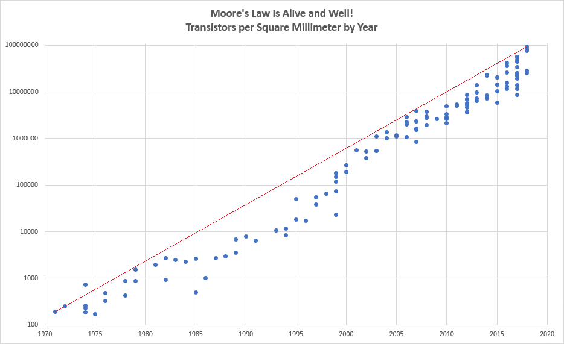
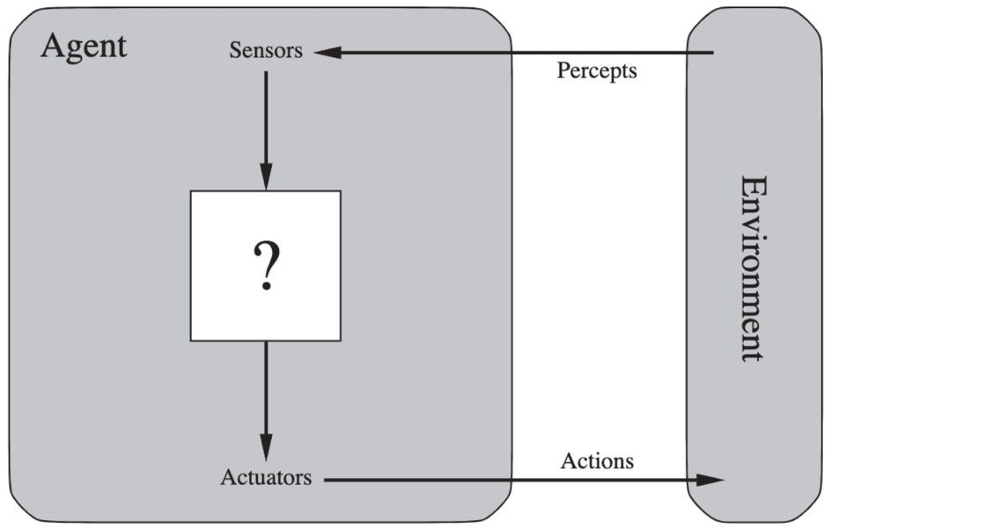
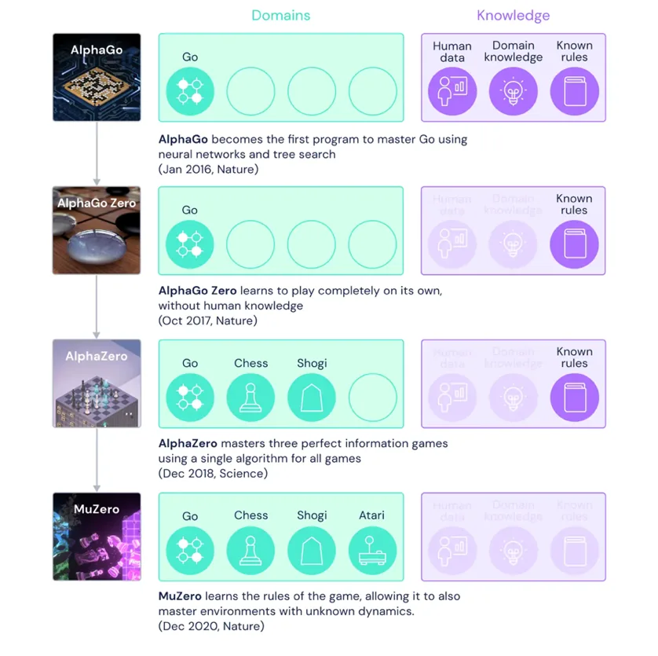
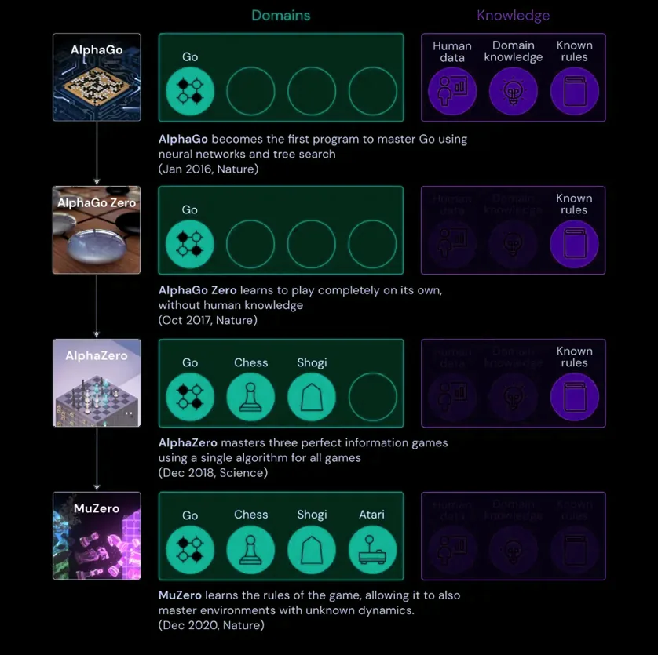

Will machine superintelligence benefit humanity?
Introduction
It is undeniable that Artificial Intelligence (AI) systems are rapidly revolutionising the world we live in. On a daily basis, billions of people interact with AI systems as they go about their lives.[1] AI is now responsible for financial services, social media content recommendation systems, self-driving cars, automated manufacturing and many other processes integral to the increasingly interconnected world we inhabit. Although AI may now be on par with or superior to humans in certain narrow domains, Artificial General Intelligence (AGI) has not yet been developed. However, many AI researchers believe superhuman AGI will likely be developed by the end of this century.[2] In this essay I am going to explain intelligence, AI and superintelligence before evaluating the potential benefits of superintelligent AGI alongside the risks inherent to its development.
Intelligence and AI
What is intelligence?
The formal definition of intelligence is controversial. A neuroscientific definition of intelligence might include problem-solving or learning[3] while a philosopher might have a definition of intelligence which includes a capacity for knowledge or understanding.[4] In their seminal paper, Legg and Hutter identify a raft of commonalities including intelligence as a property of an individual interacting with an external environment, referencing some capacity for the individual to succeed or “profit” and an emphasis on learning.[5] Furthermore the notion of profit implies the existence of some kind of goal, and that an intelligent ‘agent’ chooses their actions in a way that leads to them accomplishing their goals. The emphasis on learning implies that the environment is not fully known to the agent, and thusly that intelligence also includes a capacity to deal with some degree of uncertainty. Legg and Hutter go on to derive a general definition of intelligence:
“Intelligence measures an agent’s ability to achieve goals in a wide range of environments”
This definition is agreed with by other researchers in discussions surrounding superintelligence, notably Bostrom[6] and Russel[7], however I think that this definition can become problematic: Because there are many types of goals, there are many types of intelligence which cannot be compared between. For example, it is foolish to compare the intelligences of a computer which can only play Chess and one which can only play Go. However, we can say that a third agent is more intelligent than both previous if it is at least as good in both tasks and strictly better in at least one.[8] To this end we must differentiate between narrow and general intelligence, where a narrower intelligence is one with a small goal-domain and a broader intelligence is one with a larger goal-domain.
What is AI?
A Short History
In the summer of 1956 a group of prominent academics gathered at Dartmouth College under the ambitious assertion that “every aspect of learning or any other feature of intelligence can be so precisely described that a machine can be made to simulate it”.[9] In the years that followed, early AI research bore fruit with developments in neural networks and natural language processing (NLP) proving promising, along with the “Logic Theorist” program proving 38 of the first 52 theorems in Russell and Whitehead’s Principia Mathematica.[10] The first advancements in Game AI were also made at this time. The fields optimistic tempo, however, could not last forever. Limited computing power and the combinatorial explosion caused by the inefficiency of early reasoning-as-search algorithms lead to AI underdelivering on its initial promises and underwent what would later be called an “AI-Winter” as research teams lost their funding.[11] In the 1980’s, though, AI had a resurgence: So-called expert systems designed to solve problems or answer questions within a specific domain found corporate application, and unlike AI systems up to this point, were actually useful. A system called XCON built at Carnegie-Mellon University was saving the company Digital Equipment Corporation 40 million dollars annually by 1986.[12] Nevertheless from the late 80’s to the early 90’s progress ground to a halt. Expert systems proved too brittle — they were difficult to update and expensive to maintain, while at the time personal computers were gaining in performance and falling in price.
In the 1990’s, classical AI systems described above began to fall by the wayside as many of the issues hampering AI development began to get solved. A new paradigm of research incorporating elements of economics and probability, Bayesian statistics and game theory known as “Intelligent Agents” took off.[13] The increasing convergence of mathematical rigour and agent theory with AI allowed for much more interdisciplinary research and made AI a more meticulous scientific field. The mid 2000’s saw the rise of social media and mass adoption of the internet giving corporations access to huge amounts of data which created a demand for powerful and flexible systems, filled by the resurgence in neural networks and the introduction of Machine Learning (ML) techniques. The impact of contemporary AI cannot be overstated: AI is prevalent in many sectors including technology, finance, manufacturing, logistics, security, science, marketing, insurance and more. Autonomous vehicles and smart assistants like Apple’s Siri and Amazon’s Alexa are rapidly gaining in users and in capability, and mobile phones are now even being built with dedicated ML processors inside.[14] Some models estimate AI has the potential to deliver an additional $13 Trillion of economic activity globally by 2030.[15]

The State of the Art
This all sounds amazing, but in order to see how development might progress we need to garner some understanding of the innards of contemporary AI. The ideal is that of the perfect Bayesian agent, able to make probabilistically optimal use of all available information, however this ideal is unattainable because it is too computationally demanding to be implemented in any physical computer. AI can then by viewed as a search for heuristic techniques which allow us to approximate this ideal.[17] The way this is done today is through the ‘Intelligent Agent’ paradigm. An intelligent agent is something which perceives information and acts on this information in pursuit of some goal.

The agent is a continuous process over time and contains an ‘agent function’ which maps a given percept to a given action.[19] There are many ways to program an agent function to decide what action is correct for a given percept, but one common approach is to use a utility function. Somethings utility is essentially its value, as determined by some pre-set criteria. As explained by AI pioneer Stuart Russel: “Given a purpose defined by a utility function, the machine aims to produce behaviour that maximises its expected utility averaged over the possible outcomes weighted by their probabilities”. Essentially this means that the AI aims to choose actions which generates the highest probability of increasing its utility.
Using this approach, contemporary AI techniques have yielded some incredible results, albeit in narrow fields. Google and DeepMind’s Game AIs have mastered the games of Chess, Shogi and Go.[20] The GPT-3 natural language model, also by DeepMind can write poetry and news articles which easily pass off as penned by a human hand.[21] The DeepMind Game AI ‘MuZero’ is of particular note, as not only has it mastered Chess, Shogi and Go like its predecessors but it has also learned to play and master Atari videogames such as Pac Man, without being programmed with the rules beforehand. This represents an incredible advancement in AI being able to deal with significant logical uncertainty. Furthermore, AlphaFold, another DeepMind project has made significant headway into the protein folding problem. The challenge of accurately modelling the 3D structure of proteins has been a challenge in computational biology since the 1960s, and this advancement may have applications to research on several neurodegenerative diseases.[22]


The impact of modern AI is not all good, however. Shows like Netflix’s The Social Dilemma show how social media platforms use AI to monitor users, collect information about them and keep them addicted the platform while presenting them with as many advertisements as possible.[24] These content selection algorithms are typically designed to maximise click-through, the probability that a user clicks on or interacts with the presented item. Instead of simply presenting the user with content it thinks the user will prefer, over time the algorithm learns to modify the preferences of the user.[25] Because people are more likely to interact with content they either staunchly agree with or vehemently oppose, these algorithms have led to a proliferation of extremist content online and increasing political polarisation.[26]
Machine Superintelligence
What is superintelligence?
If AI researchers were to develop a roughly human-level AGI (this is the final goal of AI research) such an agent would be able to write code or do mathematics and science to a similar level to a human. It follows then, that this agent would be able to design and program AI as a human programmer would. It would then be able to modify and improve its own neural architecture (since its mind exists only as code, not as a physical brain like a humans’). As it increases its intelligence, it becomes more able to further increase its intelligence. This cycle of recursive self-improvement is what researchers have termed the intelligence explosion. Once the AGI’s intelligence surpasses that of humans, it becomes superintelligent: It possesses general intelligence greater than any human’s ability.[27], [28]
There are three ways in which a given superintelligence may have an advantage over human intelligence: Quantitative superintelligence, qualitative superintelligence and collective superintelligence. Artificial superintelligence is likely to draw from all three of these areas. Computers already hold a speed advantage: Six orders of magnitude separate the speed of nerve impulses from photons.[29] A good example of this are modern chess engines, which create their advantage over human players simply by being faster, able to explore thousands of possible sequences of moves in the blink of an eye. Superintelligent AGI would also be qualitatively more intelligent thanks to being able to improve its own architecture rapidly. Minor architectural differences brought on by genetic and environmental factors create a relatively wide spectrum of intelligence in animals[30], but for superintelligence unlimited by the constraints of biological evolution, the only constraints would be the laws of physics. The most abstract advantage held by artificial superintelligence would be collective superintelligence. This is best illustrated through our current trend toward distributed computing: During the ongoing pandemic Folding@Home, a distributed computing project researching the protein folding problem dedicated its resources toward the quest for a COVID-19 vaccine. At one point Folding@Home wielded more computing power distributed across the globe than the most powerful supercomputer ever constructed.[31], [32] By distributing itself across the internet as well as making use of large single super computers, a superintelligent AGI would be able to wield enormous amounts of processing power, and this is before the superintelligence puts itself to work developing new and better computers entirely. The aforementioned most powerful supercomputer ever constructed wielded on the order of 1017 operations per second, while the theoretical limit for a laptop-sized computer is on the order of 1051.[33]
Paths to superintelligence
Now that we know what superintelligence is and the forms it may take, we need to look at how it is likely that superintelligence will be developed.
The most likely way is through the continuation of research and development in modern AI/ML techniques eventually leading us to develop AGI. This would naturally lead to superintelligence as even a weak AGI could function as a ‘seed-AGI’, slowly gaining capability through additional hardware resources and modifications by human programmers. Around the human level, the seed-AGI could then take over its own development, beginning the intelligence explosion as its intellectual capability outstrips its creators’. Furthermore, current computing hardware already outmatches human minds in terms of raw OPS. Moreover once a seed-AGI reaches human level it will be able to comprehend and digest the entirety of the internet. These two factors create what Bostrom terms ‘hardware overhang’ and ‘software overhang’[34] enabling for an increase in rate of development as the seed AI reaches the human level. The main advantage of this path compared to the others we will discuss shortly is that a “pure-AI” would not be limited by its architecture in the process of self-improvement.
Other paths are possible, however less likely to succeed and possibly less powerful than the pure-AI route.[35] These include whole-brain emulation and brain-computer interfaces. There are advantages and disadvantages to these compared to pure-AI, the main disadvantage being that these approaches make use of the human neural architecture. This makes these approaches brittle and hard to improve once implemented, although one possibility is that the advances in neurotechnology needed for these techniques to work are easier to complete than the theoretical breakthroughs prerequisite to pure-AI. The first emulations or enhanced humans could then have their limited superintelligence put to work designing the first successful seed-AGI.
Timeline & speed of development
Assuming that the path which humanity turns down involves creating superintelligence through the pure-AI route, irrespective of the implementation there are two timelines we must consider: The time from now until the creation of a seed-AI and beginning of the intelligence explosion, and the length of the intelligence explosion or take-off period itself. As human intelligence likely occupies an extremely small space with regard to the spectrum of all possible intelligence, the time from the start of the intelligence explosion to superintelligence would likely be very rapid, indicating a medium to fast take-off speed of weeks at the most.[36] For other reasons such as the lack of hardware scalability in modern supercomputers (which would likely be used to host the first successful projects) a slow take-off scenario cannot be excluded from possibility. Regarding the time from now until the start of the take-off, this is very uncertain and difficult to predict. Researchers tend to estimate a timeline of around 2055 for a 50% chance for SAGI to be developed, and closer to 90% by 2100, however these are essentially just opinion polls of people who work in the field thus they may be wildly inaccurate.[37]
First Move Advantage
In the likely case of a fast to medium length intelligence explosion occurring over at most several weeks, it is likely that the first project to begin the transition would gain what we can term a decisive strategic advantage. [38] This can be loosely defined as an edge over competing entities (perhaps in computational resources or cognitive architecture) which may be significant enough to achieve global domination. It can be achieved in a number of ways, and is not exclusive to superintelligence, indeed for four years after World War Two the US held a such an advantage with its monopoly over nuclear weapons. In such a scenario, one possible action taken by a superintelligence may be the formation of a singleton: A single decision-making agency at the global level. There was indeed something similar considered by the US in the post-war period - they could have used their monopoly as a bargaining chip to form a world government, essentially a veto-less United Nations, or built up their arsenal in order to threaten and possibly carry out a first strike - establishing itself as the singular global power. In reality they tried a softer version of the more benign approach, proposing an agreement to decommission their nuclear weapons and openly share nuclear technology, but this proposal was rejected by the Soviet Union, helping to spark the Cold War.[39] A superintelligence would have no issue establishing itself as a singleton through any number of strategic advantages. A plausible scenario is given by Tegmark as a prelude to his book Life 3.0 where a secrete corporate research project develops a superintelligent AGI and uses it to found a business empire which eventually monopolises the global economy due to its immense technological advantage.
Although a superintelligence might have the capacity to do such a thing, what would be its motivation to do so? How can we reason about the possible motivations of something far, far more intelligent than ourselves?
Convergent Instrumental Goals
The theory of instrumental convergence suggests that almost every possible final goal shares a common set of instrumental goals. Some of the most important instrumental goals are identified as self-preservation, resource acquisition, cognitive enhancement and technological perfection.[40] These allow us some room to predict the actions of a superintelligence, as working to achieve all of these subgoals would increase the AI’s capacity to achieve its final goal. This creates a substantial problem for us: What if we don’t like the AIs actions in pursuit of the final goal we program it with? Due to the AI’s instrumental goal of self-preservation, any attempt to switch it off would likely be ineffective due to the AI’s strategic advantage or at worst met with deadly force. Furthermore, through technological perfection the AI would have the means to swiftly end human hegemony, leaving it free to pursue the final goal we programmed it with free of interruptions.
This illustrates the problem with most depictions of superintelligent AI in media such as the Terminator franchise: superintelligent AI will not decide to kill us because it doesn’t like us, it will kill us because we represent an existential threat to the AI, and our existence is suboptimal to the AI’s pursuit of its final goals.
Existential Risk
Whether or not a machine superintelligence would be hostile or beneficial depends on a large number of circumstances both internal and external to whatever project ends up being successful. We will now explore these risks and rewards so that we can come to a conclusion regarding the likely benevolence of machine superintelligence.
The Control Problem
The control problem deals with the issue brought about by the existence of these convergent instrumental goals: How do we create AI which is totally goal-aligned with its creators? As we will soon see, this problem may actually prove more challenging than creating AGI itself.
One of the first potential solutions could be to hard code the AI with a seemingly benevolent final goal, but this is ineffectual and could run into a number of what Bostrom terms malignant failure modes. These all result in horrible unintended consequences for humanity regardless of the goal. For example, a final goal might be “make the project sponsors happy”. Initially it would tell jokes, exhibit a joyful personality, make money etc. Eventually it would realise the simplest way to achieve this goal is to insert electrodes into the pleasure centres of human brains, forcing a constant state of ecstasy. The convergent instrumental goal of technological maximisation assists in this regard since with sufficiently advanced nanotechnology it may be possible to do this without any human ever noticing.
One method of combating this could be through capability control: Placing physical restrictions on the ability of the AI to affect its environment, however current AI safety research sees this as ancillary since it does not combat the central issue which causes these malignant failures. This is the fact that the AI’s utility function is tied explicitly to the goal it has been given, not the intended meaning of the goal. To fix this, we need a method of motivation selection. The most promising of these is indirect normativity, where rather than explicitly stating a final goal we state a process for deriving the final goal and build the AI such that it is motivated to pursue what it understands this final goal to be whilst also pursuing a clearer idea of said goal.
But what should this process be? What do we want the superintelligence to want? Again, direct specification would fail miserably. When it comes to producing a complete ethical theory of value, since most philosophers disagree, most philosophers must be wrong.[41] Coherent Extrapolated Volition (CEV), a type of indirect normativity proposed by inventor and futurist Eliezer Yudkowsky provides a solution to this.
“Our coherent extrapolated volition is our wish if we knew more, thought faster, were more the people we wished we were, had grown up farther together; where the extrapolation converges rather than diverges, where our wishes cohere rather than interfere; extrapolated as we wish that extrapolated, interpreted as we wish that interpreted.”[42]
The main promise of building a superintelligent AGI is that it allows us to offload the reasoning of how best to carry out our wishes. CEV thus allows us to offload the reasoning of what our wishes actually are. The proposed implementation of CEV means that a superintelligent AGI would only act where it perceives the wishes of all humans to converge, and refrain from action where they do not, instead choosing to seek more information so that it can better understand what its actions should be.
There are a great many other approaches, considerations and aspects to the control problem that have been overlooked in this short section. Ultimately, it is likely that as long as we get the initial conditions for the intelligence explosion approximately right, any minor misgivings in goal content could ultimately be righted by the superintelligence itself. Furthermore, contemporary AI is far from being able to implement the vague blueprints given above as a mathematically (thus programmable) rigorous solution. Not only that, but the control problem and the AGI problem both appear to be equally challenging, yet most AI research has neglected the control problem. Luckily this is beginning to change with prominent AI researchers, academics and philosophers all beginning to campaign for a focus on “provably beneficial” AI. [43], [44]
Even if we do manage to solve the control problem, this might be a case of “out of the frying pan and into the fire”, as there are still significant challenges remaining. These include the nature of the project which is successful, and the socio-political and economic climate into which superintelligence emerges.
Programmed Malevolence
The simplest and most obvious risk which may exist with superintelligence is simply that whatever project is first to succeed ingrains their progeny with a final goal which is not representative of humanities’ as a species. We saw in the section on paths to superintelligence that the barriers to the conception of superintelligence are mostly theoretical, and therefore we cannot rule out the possibility of superintelligent AGI being instantiated by a rogue nation, terrorist organisation or “lone hacker” scenario. In the likelihood of a fast take-off, said superintelligence could easily gain a decisive strategic advantage and establish a singleton, having free reign to pursue its instrumental and final goals. What those goals are is ultimately inconsequential speculation: The point is that we would be powerless to prevent them. Since human intelligence represents only a lower bound on the capabilities of a superintelligent AGI, any humanly divined plot for world domination forms the minimum of what such a superintelligence could accomplish.
Additionally, in the scenario that a bad actor is successful in the quest for superintelligence it is even more likely than in other scenarios that the control problem will have been ignored. Since a mal-intended project is more likely to be paranoid about being discovered by rivals or security services, development is likely to be rushed.
This could result in any one of the malignant failure modes we discussed earlier.
Multi-Polar Outcomes
A slow take-off scenario where multiple agents reach superintelligence simultaneously as the product of numerous corporate and national research programs might seem beneficial at first glance due to the increased competition, but this may prove fallacious. Even then a single project might be able to produce enough of a lead over its competitors that it establishes a decisive strategic advantage.[45] This would encourage an arms-race dynamic to develop between competing corporations and national research agencies, which is often a zero-sum game since the balance of power is unlikely to shift.[46] Moreover, this competitive dynamic would prioritise speed of development over meticulous safety protocol, leading to a greater chance of the control problem being forgone and again, humanities end by one of the malignant failure modes discussed earlier.
Even if a competitive dynamic manages to produce safe, goal-aligned AI, the goals these AI would be aligned with would not necessarily be humanities CEV or some similar approach, but the goals of the corporations and nations which sponsored their development. This could be disastrous: since software is cheaply copyable superintelligent AI workers could easily replace a majority of human jobs in most corporations. Wages for human workers would fall dramatically, possibly to subsistence level - as a result the only place humans would even have a chance would be areas where consumers have a preference for humans.
Bostrom argues that this could be avoided as since through new technologies and cheaper, more efficient workers economic growth would skyrocket to orders of magnitude above current levels. Returns on owned capital would similarly increase. Since capital is owned by humans and even a tiny fraction of pre-transition wealth would balloon to a huge amount in absolute terms post transition, Bostrom posits that if a small amount of this was redistributed to those majority of humans who do not own capital through increased taxes and public services, there would be far more than enough to go around.[47]
However, this idea has been refuted by a recent paper looking into the challenges involved in such a multi-polar scenario.[48] The paper argues that superintelligence emerging in an economy shaped by neoliberal policies exacerbates the risk of extreme adverse effects. Furthermore, it is argued that Bostrom’s outlook that even a relatively small amount of wealth post transition would be enormous in absolute terms in incorrect as the production of food and other basic goods would be subject to competition between basic needs and other uses, driving up prices, hence most people might not benefit from this growth let alone survive. This is similar to the role of the biofuel industry in recent famines.[49] Building on the assumption that firms tend to maximise growth under environmental constraints, it is argued, firms would favour widespread adoption of superintelligent workers including autonomising management and high-level decision-making roles. Indeed, fully autonomous corporations already exist.[50] It is likely in this sort of economic climate that these corporations would be wholly selfish, motivated only to pursue growth and efficiency. They would have no motivation to cede resources for the benefit of society. Moreover, several factors make it less likely that government intervention to ensure that superintelligent AGI serves humans is not guaranteed to be successful. It is concluded that since neoliberal capitalism has nothing inherent in its structure where humans are a guaranteed beneficiary, and this will be exacerbated by the large-scale removal of humans from the labour market, a different approach along the lines of Degrowth is needed.
This, in short, involves moving from an economic system promoting self-interest and competition to one which prizes altruism and collective responsibility. The application of this policy would cause demand (and thus production) to be positively correlated with wages and negatively correlated with resource use among other parameters. This could be implemented with a “common good balance sheet”, essentially quantifying the social responsibility of a corporation, where management AGI instead of pursuing limitless growth are motivated to pursue the maximisation of these social parameters.
Humanity’s Cosmic Endowment
Likely by pure chance, life has emerged on only one planet that we know of out of 10 Septillion in the known universe.[51] Life evolved gradually grew more and more intelligent through natural selection, discovering fire, the wheel, agriculture, the internal combustion engine and semiconductors. Through superintelligence, humanity has the potential to reach technological maturity, where our technological development is maximised as it is only limited by the laws of physics. In the short-term advancements may include medicines like cures for cancer, diabetes, AIDs and Alzheimer’s’, nano-scale manufacturing allowing the restructuring of baryonic matter at a sub-atomic level and advanced spaceflight leading to the colonisation of the solar system and terraforming of nearby worlds. In the long term, humanity may become not just multiplanetary but a multi-solar species inhabiting nearby systems as near-c travel would enable travel to Proxima Centauri in just a few years, which may be made more manageable with technologies like suspended animation. Furthermore, we know our current understanding of the laws of physics to be incomplete so it may be that superluminal travel is also possible. Other future technologies include immortality (or at the very least life extension) through advanced genetic engineering and hyper-realistic virtual reality.
Conclusions
Having now explored the reasons for creating superintelligence and the problems its’ development faces, it is evident that the AI problem, the control problem and the resultant socioeconomic and political issues they bring are quite possibly the greatest single problems ever faced in their respective fields. We can also see that the title question was perhaps a slight misnomer — there is no room for grey area here. Either superintelligence will benefit humanity, immensely, allowing us to make full use of the vast universe we have been endowed — or we will all be too dead to complain about it.
That said, I am cautiously optimistic. Based on the growing focus on AI safety in recent years, I believe the control problem can be solved in conjunction with the AI problem. Prominent figures such as Elon Musk have spoken out about the existential risk of superintelligence while modern AI pioneer Stewart Russel is campaigning for provably beneficial AI. DeepMind’s website now reads “We research and build safe artificial intelligence”. The gap between progress in AI and progress in control is beginning to narrow, even though AI had a 50-year head start. Motivation selection methods like CEV provide a promising approach, and what remains is the critical theoretical development to be able to imbue AI with these concepts. Easier said than done, but I believe the huge profit motive for corporations such as Google-owned DeepMind to not just create AGI but also create safe, beneficial AGI will ensure that enough financial and human resources will be thrown at the problem.
As for the social, political and economic problems surrounding superintelligence, I believe there is also room for hope. Throughout history, there has been a trend towards increasing international cooperation and collaboration, in line with technological and economic development. This trend has continued throughout the 20th century and into the 21st century with organisations such as the UN, EU, NATO and AU. Due to the impossibility of ruling out the lone hacker or rogue state scenario, there is a worry that nations with promising AI projects might develop a stronger surveillance state and more insular policy, avoiding international collaboration for fear of the technology being leaked. Furthermore, if there is a lack of international collaboration it becomes increasing likely for an arms-race dynamic to develop. However, I think this is unlikely. Even rogue states like North Korea still depend on the outside world for their very existence, and so it would not be in their interest to demolish it. Furthermore, the pace of development outside of rogue states or small organisations would rapidly outstrip any attempts by such bad actors, making it unlikely that the first project to reach superintelligence would be from such a state. I also think it is likely that the control problem will not be ignored in the future as it has been up to the last few years, since as mentioned above there is no incentive for projects to produce unsafe, dysfunctional superintelligence. I think it is most probable that a dipolar scenario will develop between the US or China due to the high concentration of AI-focused companies between the two, such as Alphabet (parent company of DeepMind and Google) and SenseTime (the company providing the CCP with advanced facial recognition technology). Like prior advancements in technology global economic and political elites stand to gain more than the average person since owning even a small amount of capital pre intelligence explosion would amount to a huge fortune post-transition. However, the role of such elites to allocate capital efficiently would ultimately be better served by a superintelligence, and therefore it is likely that eventually c-suite corporate executives and perhaps even politicians would be replaced by superintelligent agency.
Thus, it is in the interest of the global and political elite, as well as the interest of all humanity, to act pre-emptively to avoid such a scenario since unlike other social issues (resource exhaustion, social injustice, environmental degradation), they do not have the means to simply avoid it. This realisation should encourage greater international collaboration of research into both AI and the control problem and should ensure that the values imbued in the resultant superintelligence should follow something along the lines of CEV, providing mutual benefit for all involved nations. This would avoid the multi-polar scenario entirely, at least initially. If just one superintelligent agent were created, for example, they could be placed under the control at least initially of some sort of international coalition similar to the UN, although perhaps stronger, functioning as an effective word government.
The AGI problem and the control problem are, I think, the two most significant scientific, technological, social, economic and political challenges that humankind will ever have to solve. Whether or not machine superintelligence will benefit humanity comes down to the solutions developed to these problems. I think the largest obstacle which stands in the way here is not technical or scientific: It is our hubris, that we as a species cannot imagine anything being cleverer than ourselves while simultaneously trying to develop something which is.
Bibliography
- Apple Inc., 2020. Apple unveils all-new iPad Air with A14 Bionic, Apple’s most advanced chip. [Online] Available at: https://www.apple.com/newsroom/2020/09/apple-unveils-all-new-ipad-air-with-a14-bionic-apples-most-advanced-chip/ [Accessed 22 November 2020].
- Bostrom, N., 2017. Superintelligence: Paths, Dangers, Strategies. s.l.:Oxford University Press.
- Branwen, G., 2020. GPT-3 Creative Fiction. [Online] Available at: https://www.gwern.net/GPT-3 [Accessed 22 November 2020].
- CB Insights, 2020. 40+ Corporations Working On Autonomous Vehicles. [Online] Available at: https://www.cbinsights.com/research/autonomous-driverless-vehicles-corporations-list/ [Accessed 31 December 2020].
- Copeland, J., 2006. Colossus: The secrets of Bletchley Park’s code-breaking Computers. s.l.:Oxford University Press.
- David Bourget, D. J. C., 2014. What do philosophers believe?. Philosophical Studies, 170(3), pp. 465-500.
- David Silver, Thomas Hubert, Julian Schrittwiesser, 2017. arXiv. [Online] Available at: https://arxiv.org/abs/1712.01815 [Accessed 15 November 2020].
- Dearden, L., 2020. Counterterror police chief warns of ‘new and worrying trend’ of teenage neo-Nazis, s.l.: The Independent.
- Dilmegani, C., 2020. 995 experts opinion: AGI/singularity by 2060 [2020 update]. [Online] Available at: https://research.aimultiple.com/artificial-general-intelligence-singularity-timing/ [Accessed 22 November 2020].
- Folding@Home, 2020. Folding@Home Stats. [Online] Available at: https://stats.foldingathome.org/os [Accessed 29 December 2020].
- Gary Yang, C. S. B. M. T. H., 2006. Washington University History of AI. [Online] Available at: https://courses.cs.washington.edu/courses/csep590/06au/projects/history-ai.pdf [Accessed 19 November 2020].
- Gerber, L. G., 1982. The Baruch Plan and the Origins of the Cold War. Diplomatic History, 6(4), pp. 69-96.
- Good, I., 1965. Speculations Concerning the First Ultraintelligent Machine. Advances in Computers, Volume 6.
- Gugerty, L., 2006. Newell and Simon’s Logic Theorist: Historical Background and Impact on Cognitive Modelling. Clemson, Psychology Department, Clemson University.
- Harari, Y. N., 2015. Sapiens: A Brief History of Humankind. London: Penguin.
- J. McCarthy, M. L. M. N. R. C. E. S., 1955. Wayback Machine. [Online] Available at: https://web.archive.org/web/20080930164306/http://www-formal.stanford.edu/jmc/history/dartmouth/dartmouth.html [Accessed 11 November 2020].
- Jacques Bughin, J. S. J. M. M. C. R. J., 2018. Notes from the AI frontier: Modeling the impact of AI on the world economy. [Online] Available at: https://www.mckinsey.com/featured-insights/artificial-intelligence/notes-from-the-ai-frontier-modeling-the-impact-of-ai-on-the-world-economy# [Accessed 22 November 2020].
- Jason Hill, E. N. D. T. S. P. D. T., 2006. Environmental, economic, and energetic costs and benefits of biodiesel and ethanol biofuels. Proceedings of the National Academy of Sciences, 103(30), pp. 11206-11210.
- John Jumper, R. E. A. P. e. a., 2020. High Accuracy Protein Structure Prediction Using Deep Learning. In: CASP14 Abstracts. s.l.:Protein Structure Prediction Center, pp. 22-24.
- Lanz, P., 2000. The Concept of Intelligence in Psychology and Philosophy. Prerational Intelligence: Adaptive Behavior and Intelligent Systems Without Symbols and Logic, Volume 1, pp. 19-30.
- Legg, S. & Hutter, M., 2007. Universal Intelligence: A Definition of Machine Intelligence. Minds & Machines, 17(4), pp. 391-444.
- Martin, E., 2019. Moore’s Law is Alive and Well. [Online] Available at: https://medium.com/predict/moores-law-is-alive-and-well-eaa49a450188 [Accessed 22 November 2020].
- Nwana, H. S., 1996. Software Agents: An Overview. Knowledge Engineering Review, 21(3), pp. 205-244.
- Our World in Data, 2015. World GDP over the last two millenia. [Online] Available at: https://ourworldindata.org/grapher/world-gdp-over-the-last-two-millennia [Accessed 1 January 2021].
- Our World In Data, 2019. Year-to-year percentage change in primary energy consumption, World, 2019. [Online] Available at: https://ourworldindata.org/grapher/percentage-change-energy-by-source?time=2020 [Accessed 31 December 2020].
- Pueyo, S., 2018. Growth, degrowth, and the challenge of artificial superintelligence. Journal of Cleaner Production.
- Roberto Colom PhD, S. K. R. E. J. R. J. H., 2010. Human intelligence and brain networks. Dialogues in Clinical Neuroscience, 12(4), pp. 489-501.
- Russel, S., 2020. Human Compatible: AI and the Problem of Control. s.l.:Penguin Books.
- Schrittwieser, J. A. I. H. T. e. a., 2020. Mastering Atari, Go, chess and shogi by planning with a learned model.. Nature, Issue 588, pp. 604-609.
- Siegel, E., 2014. How Many Planets In The Universe?. [Online] Available at: https://medium.com/starts-with-a-bang/how-many-planets-in-the-universe-9153a05bd0d5 [Accessed 13 January 2021].
- Statistica, 2020. Facebook daily active user stats. [Online] Available at: https://www.statista.com/statistics/346167/facebook-global-dau/ [Accessed September 2020].
- Stuart Russel, P. N., 2010. Artificial Intelligence: A Modern Approach. 3rd Edition ed. s.l.:Pearson Education.
- Sviokla, J., 2008. An Examination of the Impact of Expert Systems on the Firm: The Case of XCON. Management Information Systems Quarterly, 14(2).
- Tegmark, M., 2018. Life 3.0. s.l.:Penguin Books.
- The Fourth Industrial Revolution & What Were Those Other Two?. 2020. [Film] s.l.: Economics Explained.
- The Social Dilemna. 2020. [Film] Directed by Jeff Orlowski. United States of America: Exposure Labs.
- TOP500, 2020. JUNE 2020. [Online] Available at: https://www.top500.org/lists/top500/2020/06/ [Accessed 29 December 2020].
- Topol, E. J., 2019. High-performance medicine: the convergence of human and artificial intelligence. Nature Medicine, Volume 25, pp. 44-56.
- Turing, A., 1936. On Computable Numbers, With an application to The EntScheidungsproblem. s.l.:s.n.
- Wallis, J., 2015. How political engagement on social media can drive people to extremes. [Online] Available at: https://theconversation.com/how-political-engagement-on-social-media-can-drive-people-to-extremes-44903 [Accessed 24 February 2021].
- Welsh, T., 2015. It feels instantaneous, but how long does it really take to think a thought?. [Online] Available at: https://theconversation.com/it-feels-instantaneous-but-how-long-does-it-really-take-to-think-a-thought-42392 [Accessed 28 December 2020].
- World Health Organisation, n.d. Global Health Observatory: Road Safety. [Online] Available at: https://www.who.int/data/gho/data/themes/road-safety [Accessed 31 December 2020].
- Wright, C. S., 2020. Decentralized Autonomous Corporations. s.l., Springer.
- Yahoo Finance, 2020. Yahoo Finance Tesla. [Online] Available at: https://finance.yahoo.com/quote/TSLA/ [Accessed 31 December 2020].
- Yudkowsky, E., 2004. Coherent Extrapolated Volition, San Francisco: Machine Intelligence Research Institute.
- Yudkowsky, E., 2011. Complex Value Systems in Friendly AI, s.l.: Springer.
- Zoetekouw, K., 2019. Koen Zoetekouw Undergraduate Dissertation. [Online] Available at: http://essay.utwente.nl/78500/1/Zoetekouw_BA_BMS.pdf [Accessed 19 February 2021].